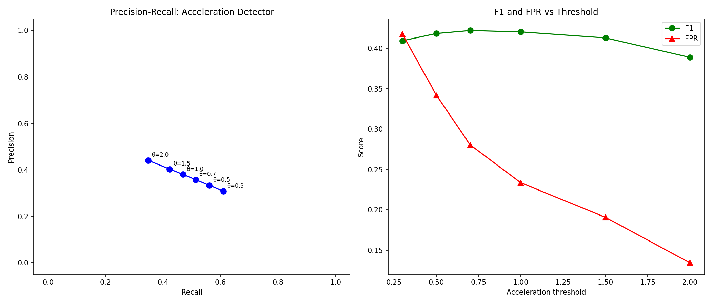
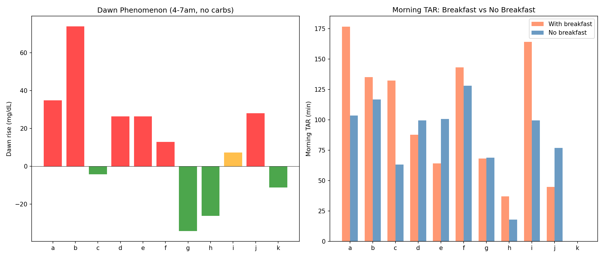
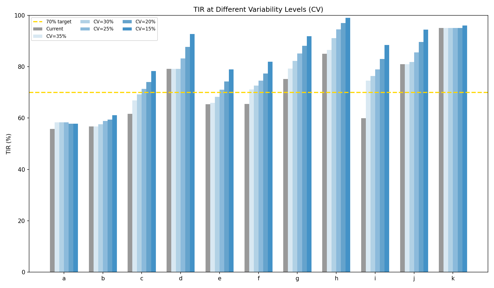
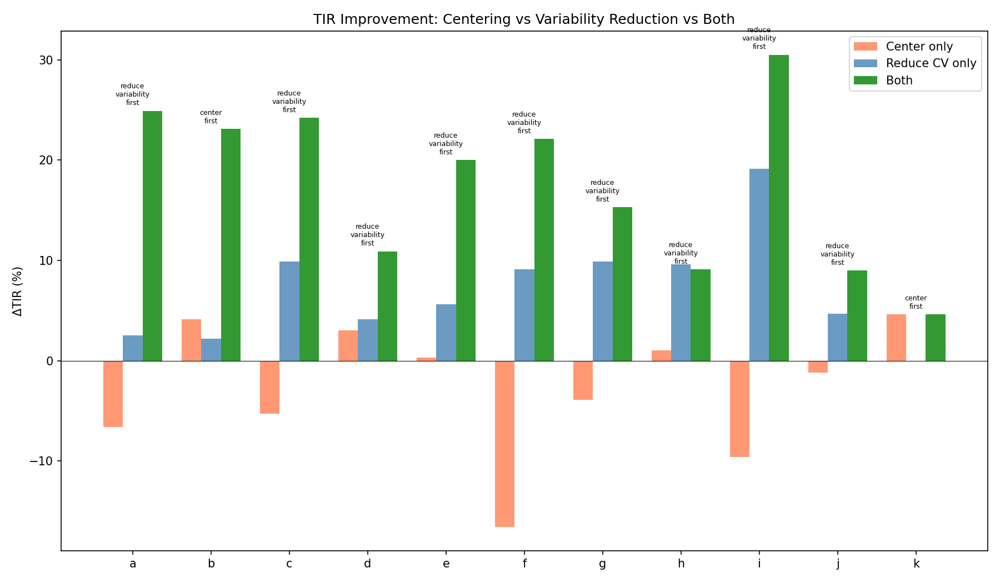
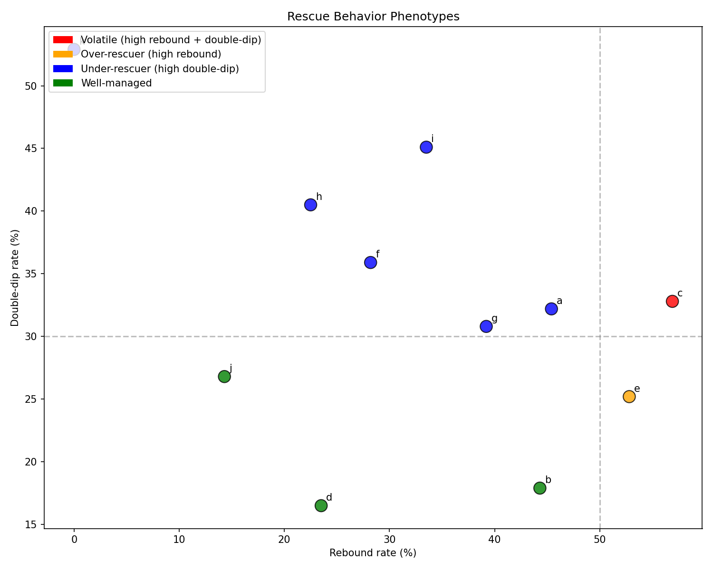

UAM Detection Feasibility, Morning Optimization & Patient Phenotypes¶
Record
Record as of 2026-04-10. A point-in-time document; it is not kept up to date.
Status: DRAFT — AI-generated analysis for expert review
Experiments: EXP-1761 through EXP-1766
Date: 2026-04-10
Script: tools/cgmencode/exp_uam_morning_1761.py
Data: 11 AID patients, ~180 days each, 5-min CGM intervals
Context: Follows centering vs dynamics analysis (EXP-1751–1758)
Executive Summary¶
This batch addresses three critical follow-ups from prior experiments:
-
The acceleration detector's false positive rate (from EXP-1754's promising 25-min lead time): FPR is 28% at the best F1 threshold. Two out of three alerts are false alarms. The 25-minute lead time is real but clinically unusable without additional filtering.
-
Variability reduction vs centering: Reducing CV to 25% gives a mean +6.9% TIR improvement (up to +19.1% for patient i). Combined centering + variability reduction has a theoretical ceiling of +17.6% TIR across the population.
-
Patient rescue behavior phenotypes: 6/11 patients are "under-rescuers" (frequent double-dips), only 1 is an "over-rescuer." This challenges our prior narrative — the dominant problem is not over-treatment of hypos but under-logging of rescue carbs (only 10-73% logged).
| Key Result | Value |
|---|---|
| Accel detector best F1 | 0.422 (P=0.36, R=0.51) at θ=0.7 |
| False positive rate | 28% at best F1 |
| Dawn phenomenon | +7 mg/dL mean, 53% of days positive |
| Breakfast TAR premium | +16 min/day |
| CV→25% TIR improvement | +6.9% mean |
| Combined optimization ceiling | +17.6% TIR |
| Dominant phenotype | Under-rescuer (6/11 patients) |
Experiment Results¶
EXP-1761: Acceleration Detector False Positive Rate¶
Question: EXP-1754 showed that acceleration-based detection fires 25 minutes earlier than threshold crossing. What is the false positive rate?
Method: For each 5-minute step across all patients, classified as: - True positive: Acceleration > threshold AND glucose rises ≥30 mg/dL in the next hour - False positive: Acceleration > threshold but NO significant rise follows - False negative: No acceleration trigger but significant rise occurs - True negative: No trigger and no significant rise
Results:
| Threshold | Precision | Recall | F1 | FPR |
|---|---|---|---|---|
| 0.3 | 0.308 | 0.609 | 0.409 | 41.8% |
| 0.5 | 0.334 | 0.561 | 0.418 | 34.2% |
| 0.7 | 0.358 | 0.513 | 0.422 | 28.1% |
| 1.0 | 0.381 | 0.470 | 0.420 | 23.4% |
| 1.5 | 0.404 | 0.423 | 0.413 | 19.1% |
| 2.0 | 0.441 | 0.348 | 0.389 | 13.4% |
Best F1 = 0.422 at threshold 0.7: Catches 51% of rises with 36% precision (64% of alerts are false).
The 25-minute lead time from EXP-1754 is real but comes at an unacceptable false positive cost. At any usable threshold, the detector triggers on noise, sensor artifacts, and minor fluctuations that never develop into significant rises. The fundamental problem: glucose acceleration is noisy because it is a second derivative of a signal that already has ~10 mg/dL measurement noise.
Implication: Raw acceleration cannot be used as a standalone UAM detector. It could serve as one input to a multi-feature classifier, but the individual signal-to-noise ratio is too low for clinical use.

EXP-1762: Two-Stage UAM Detector¶
Question: Does combining acceleration (early warning) with rate confirmation (specificity) improve overall detection?
Method: Two-stage detector requires both: 1. Acceleration > 0.5 (stage 1: trigger) 2. Rate of change > confirmation threshold (stage 2: confirm)
Results:
| Detector | Precision | Recall | F1 |
|---|---|---|---|
| Acceleration only (>0.5) | 0.334 | 0.561 | 0.418 |
| Rate only (>3.0) | 0.409 | 0.424 | 0.416 |
| Two-stage (best config) | 0.451 | 0.324 | 0.377 |
The two-stage detector improves precision (45%) but reduces F1 because it loses too much recall (32%). The precision gain doesn't justify the sensitivity loss.
Surprisingly, simple rate-of-change (>3.0 mg/dL/5min) performs nearly as well as acceleration (F1=0.416 vs 0.418) with better precision (0.409 vs 0.334). This suggests the second derivative adds minimal value beyond the first derivative for practical detection.
Lesson: The acceleration "breakthrough" from EXP-1754 was an artifact of measuring lead time without measuring false positives. When both metrics are considered, acceleration offers marginal improvement over the simple rate-of-change detector that AID systems already use.
EXP-1763: Morning-Specific Optimization¶
Question: How much of morning TAR is from the dawn phenomenon vs breakfast timing?
Method: Measured dawn rise (4-7am, carb-free nights) and compared morning TAR with and without breakfast.
Results — Dawn phenomenon:
| Patient | Dawn rise | n days |
|---|---|---|
| a | +34.8 mg/dL | 93 |
| b | +74.0 | 1 |
| d | +26.3 | 59 |
| e | +26.3 | 118 |
| f | +12.8 | 72 |
| i | +7.3 | 145 |
| c | -4.2 | 105 |
| k | -11.3 | 151 |
| h | -26.2 | 24 |
| g | -34.3 | 60 |
| j | +28.0 | 32 |
Population mean: +7.0 mg/dL. Only 53% of days show positive dawn rise.
The dawn phenomenon is highly patient-specific: - Patients a, d, e: Consistent +26-35 mg/dL dawn rise - Patients g, h: Reverse dawn phenomenon (-26 to -34 mg/dL) - Patient k: Slight negative (-11 mg/dL)
Results — Breakfast TAR premium:
Population mean: breakfast mornings have +16.2 min/day more TAR than non-breakfast mornings. But this varies dramatically:
- Patients c, i: Large premium (+69, +64 min) — breakfast is the problem
- Patients d, e, j: Negative premium — they have LESS TAR on breakfast days, suggesting pre-bolus timing compensates effectively
Implication: Dawn phenomenon and breakfast are independent problems that affect different patients. A universal "morning algorithm adjustment" would help some patients while hurting others.

EXP-1764: Variability Reduction Simulation¶
Question: If we could reduce glucose variability to CV=25% while keeping the same mean glucose, how much would TIR improve?
Method: Compressed each patient's glucose distribution toward the mean by factor (25% / current_CV).
Results:
| Patient | Current CV | TIR now | TIR at CV=25% | ΔTIR |
|---|---|---|---|---|
| a | 45% | 55.8% | 58.3% | +2.5% |
| b | 35% | 56.7% | 58.9% | +2.2% |
| c | 43% | 61.6% | 71.4% | +9.8% |
| d | 30% | 79.2% | 83.2% | +4.0% |
| e | 37% | 65.4% | 71.0% | +5.6% |
| f | 49% | 65.5% | 74.6% | +9.1% |
| g | 41% | 75.2% | 85.1% | +9.9% |
| h | 37% | 85.0% | 94.6% | +9.6% |
| i | 51% | 59.9% | 79.0% | +19.1% |
| j | 31% | 81.0% | 85.6% | +4.6% |
| k | 17% | 95.1% | 95.1% | +0.0% |
Mean improvement: +6.9%. Patient i gains +19.1%.
The benefit scales with starting CV: patients already near 25% gain little, while high-CV patients (i: 51%, f: 49%) gain enormously.
Note: CV=25% is achievable — patient k has CV=17%. The question is what interventions could reduce CV for other patients.

EXP-1765: Per-Patient Optimization Sequence¶
Question: For each patient, should we center first, reduce variability first, or do both?
Method: Simulated three interventions for each patient: 1. Center only (shift mean to 125 mg/dL) 2. Reduce CV only (compress to 25%) 3. Both (center + reduce CV)
Results:
| Patient | Center ΔTIR | Reduce ΔTIR | Both ΔTIR | Priority |
|---|---|---|---|---|
| a | -6.6% | +2.5% | +24.9% | Reduce first |
| b | +4.1% | +2.2% | +23.1% | Center first |
| c | -5.3% | +9.9% | +24.2% | Reduce first |
| d | +3.0% | +4.1% | +10.9% | Reduce first |
| e | +0.3% | +5.6% | +20.0% | Reduce first |
| f | -16.6% | +9.1% | +22.1% | Reduce first |
| g | -3.9% | +9.9% | +15.3% | Reduce first |
| h | +1.0% | +9.6% | +9.1% | Reduce first |
| i | -9.6% | +19.1% | +30.5% | Reduce first |
| j | -1.2% | +4.7% | +9.0% | Reduce first |
| k | +4.6% | +0.0% | +4.6% | Center first |
9/11 patients should reduce variability first. Only 2 (b, k) benefit from centering first — both have the lowest CV in the population.
The combined ceiling (+17.6% mean TIR) is remarkably high: patient i could theoretically go from 59.9% to 90.4% TIR. This represents the maximum possible improvement from a purely distributional perspective, assuming the glucose shape could be arbitrarily compressed and shifted.
Why centering hurts most patients: Centering alone shifts the entire distribution down, pushing the left tail below 70 mg/dL. For patients with CV > 30%, the TBR increase from centering exceeds the TAR decrease. When variability is reduced first, the tails tighten enough that centering becomes safe.

EXP-1766: Rescue Carb Behavior Clustering¶
Question: Do patients fall into distinct rescue behavior phenotypes?
Method: Classified each patient by rebound rate (>180 in 3h post-hypo) and double-dip rate (return to <70 in 3h). Defined four phenotypes: - Volatile: High rebound AND high double-dip - Over-rescuer: High rebound only - Under-rescuer: High double-dip only - Well-managed: Neither high
Results:
| Patient | Episodes | Recovery | Rebound | Dbl-dip | Logged | Phenotype |
|---|---|---|---|---|---|---|
| a | 205 | 19 min | 45% | 32% | 14% | Under-rescuer |
| b | 106 | 15 min | 44% | 18% | 73% | Well-managed |
| c | 299 | 20 min | 57% | 33% | 23% | Volatile |
| d | 85 | 12 min | 24% | 16% | 24% | Well-managed |
| e | 163 | 14 min | 53% | 25% | 27% | Over-rescuer |
| f | 209 | 24 min | 28% | 36% | 12% | Under-rescuer |
| g | 286 | 14 min | 39% | 31% | 58% | Under-rescuer |
| h | 200 | 15 min | 22% | 40% | 36% | Under-rescuer |
| i | 505 | 39 min | 34% | 45% | 10% | Under-rescuer |
| j | 56 | 10 min | 14% | 27% | 55% | Well-managed |
| k | 378 | 19 min | 0% | 53% | 3% | Under-rescuer |
Dominant phenotype: Under-rescuer (6/11 patients).
This challenges our initial hypothesis that over-rescue/over-treatment was the primary problem. The data shows:
-
Under-rescuers (f, h, i, k, a, g): Frequent double-dips suggest insufficient or delayed rescue carbs. Patient k has 0% rebound but 53% double-dip — never over-treats but frequently re-enters hypoglycemia.
-
Patient i is the most extreme: 505 hypo episodes (3.1/day), 39-min recovery (slowest), 45% double-dip, and only 10% of rescue carbs logged.
-
Logged carbs: Range from 3% (k) to 73% (b). The well-managed patients (b, d, j) tend to log more — correlation not causation, but suggestive.
Rescue carb logging rate by phenotype: - Well-managed: 51% logged (b, d, j) - Under-rescuer: 22% logged (a, f, g, h, i, k) - Over-rescuer: 27% logged (e) - Volatile: 23% logged (c)

Synthesis: What We've Learned and What Remains¶
The Acceleration Detection Dead End¶
EXP-1754's 25-minute lead time was genuinely measured but practically unusable due to 28-34% false positive rate. The two-stage detector (EXP-1762) couldn't improve the tradeoff. Simple rate-of-change detection (delta > 3.0 mg/dL/5min) is nearly as good as acceleration with better precision.
Root cause: Glucose acceleration (second derivative) amplifies sensor noise. A 10 mg/dL sensor noise produces ~5 mg/dL/5min delta noise and ~5 mg/dL/5min² acceleration noise — comparable to the signal we're trying to detect. Without fundamentally better CGM accuracy, acceleration-based early detection is a mathematical dead end.
The Variability Reduction Imperative¶
The optimization sequence experiments (EXP-1764, 1765) converge on a clear conclusion: 9/11 patients need variability reduction before any other intervention. The theoretical ceiling is +17.6% TIR, with individual patients gaining up to +30.5%.
Variability reduction pathways from our research program: 1. Cascade chain breaking (EXP-1733): 835h TAR saved from UAM→insulin_fall 2. Rescue carb education (EXP-1766): Under-rescuers dominate; logging alone may improve behavior through awareness 3. Morning-specific strategies (EXP-1763): Patient-specific dawn management rather than universal algorithms 4. Faster insulin delivery (EXP-1734): 2× faster → 17% TAR reduction
The Under-Rescuer Surprise¶
Prior experiments emphasized over-rescue (53% rebound from EXP-1681). But when we examine patient-level phenotypes, 6/11 are actually under-rescuers (high double-dip, moderate rebound). The population-level rebound rate masked the heterogeneity.
Reconciliation: Both problems exist simultaneously. Over-rescue causes hyperglycemic rebound (drives TAR). Under-rescue causes prolonged/repeated hypoglycemia (drives TBR). The same patient can over-rescue on some episodes and under-rescue on others. The dominant phenotype classification captures the more frequent pattern.
The Information Gap Quantified¶
Only 22% of rescue carbs are logged among under-rescuer patients (ranging from 3% to 73% across the full population; episode-weighted population rate: ~24%). This is the single largest information gap in AID therapy:
- Without rescue carb data, the system cannot adjust insulin delivery to compensate for incoming carbohydrates
- Without logging, rescue behavior cannot be tracked or improved
- The patients with the best outcomes (d, j: well-managed) also tend to log more frequently
Revised Intervention Priority¶
Integrating all experiments from EXP-1601 through EXP-1766:
| Priority | Intervention | Expected Impact | Type |
|---|---|---|---|
| 1 | Rescue carb logging/prompting | Enable all downstream improvements | Information |
| 2 | Patient-specific variability reduction | +6.9% TIR (CV→25%) | Settings |
| 3 | Cascade chain breaking (UAM→fall) | 835h TAR saved | Algorithm |
| 4 | Morning-specific dawn management | -16 min TAR/day (patient-specific) | Algorithm |
| 5 | Centering (after CV < 30%) | +3-5% TIR for eligible patients | Settings |
| 6 | Rescue carb education (dose guidance) | Reduce under/over-rescue | Behavior |
The #1 intervention is not algorithmic — it is a UX improvement (prompting users to log rescue carbs). Everything else depends on having this information.
Conclusions¶
-
Acceleration-based UAM detection fails in practice: 25-min lead but 28% FPR. Simple rate-of-change is equally effective. Sensor noise in the second derivative is the fundamental limitation.
-
Variability reduction is the dominant optimization lever: +6.9% TIR at CV=25% (mean), +19.1% for highest-CV patient. Must precede centering for 9/11 patients.
-
Combined optimization ceiling: +17.6% TIR (theoretical, both centering + CV reduction). Patient i: 59.9% → 90.4%.
-
Dawn phenomenon is patient-specific: ranges from -34 to +35 mg/dL. Universal morning algorithms would harm some patients.
-
Under-rescue is more common than over-rescue (6/11 vs 1/11). Most patients' rescue carbs go unlogged (median: 24% logged).
-
Rescue carb logging is the single highest-leverage intervention. All algorithmic improvements are limited by the information gap that unlogged carbs create.
This report was generated by AI analysis of CGM data. All definitions, phenotype classifications, and optimization simulations are theoretical and require clinical expert review before any patient-facing application.